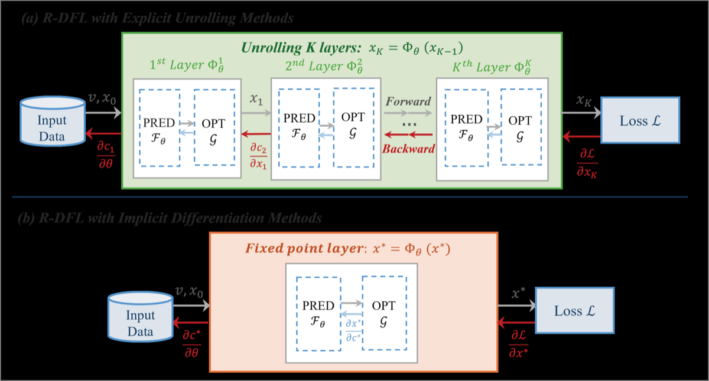
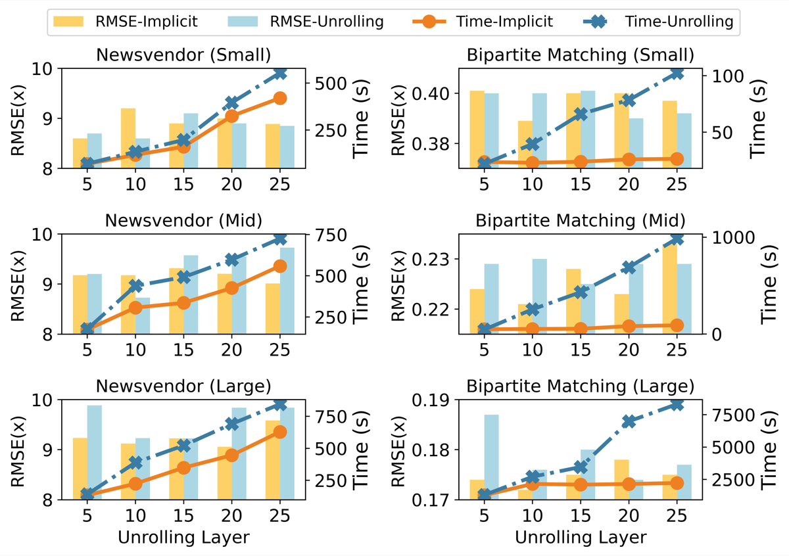

《From Sequential to Recursive: Enhancing Decision-Focused Learning with Bidirectional Feedback》读书笔记
📄 论文信息
- 标题：From Sequential to Recursive: Enhancing Decision-Focused Learning with Bidirectional Feedback
- 作者：Xinyu Wang, Jinxiao Du, Yiyang Peng, Wei Ma (The Hong Kong Polytechnic University)
- 核心贡献：提出递归决策聚焦学习（R-DFL）框架，在预测与优化之间引入反馈回路，并给出两种梯度计算方法（显式展开与隐式微分）。
1 动机或问题背景
1.1 传统方法的局限
现实世界中的决策问题（如车辆路径规划、库存管理、网约车匹配）通常面临不确定性。传统的”预测后优化”（Predict-then-Optimize, PTO）框架采用两阶段方式：
- 用机器学习模型预测不确定参数
- 基于预测结果求解优化问题
核心问题：PTO 最小化的是预测误差，而非决策损失。预测误差小不一定带来决策质量高。
PTO 流程（两阶段分离）:
┌─────────┐ ┌─────────┐ ┌─────────┐
│ 历史数据 │────→│ ML预测 │────→│ 优化求解 │────→ 决策
└─────────┘ └─────────┘ └─────────┘
↑ ↑
最小化预测误差 但决策可能次优1.2 决策聚焦学习的出现
决策聚焦学习（Decision-Focused Learning, DFL）将优化模块作为可微分层嵌入神经网络，实现端到端训练，直接优化决策质量。
S-DFL 流程（训练时闭环）:
┌─────────┐ ┌─────────┐ ┌─────────┐ ┌─────┐
│ 特征 v │────→│ 预测 F │────→│ 优化 G │────→│ 损失 │
└─────────┘ └─────────┘ └─────────┘ └─────┘
↑ ↑
└─────── 梯度 ────┘
(训练时有梯度反馈，但推理时仍为开环)1.3 现有 DFL 的根本缺陷
现有 DFL（论文称其为 Sequential DFL, S-DFL）仍保持顺序结构：
单向假设：预测指导优化，但优化结果不影响后续预测
这在复杂交互场景中失效。以网约车匹配为例：
- 平台提出匹配方案
- 司机/乘客的接受/拒绝决策提供了即时反馈
- 这些反馈本应反作用于后续匹配决策
S-DFL 在网约车匹配中的问题:
┌────────────────────────────────────────────────────────────┐
│ S-DFL 做法: │
│ ┌──────┐ ┌──────┐ ┌──────┐ ┌──────────┐ │
│ │ 特征 │───→│预测 │───→│优化 │───→│ 执行匹配 │──→ 结束 │
│ └──────┘ └──────┘ └──────┘ └──────────┘ │
│ ↑ │
│ (不接收用户拒绝的反馈) │
│ │
│ 问题：司机拒绝匹配的信息丢失，无法改进后续决策 │
└────────────────────────────────────────────────────────────┘1.4 研究问题
- 如何建模双向预测-优化系统？
- 在循环结构中如何实现梯度传播？
2 解决方法
2.1 R-DFL 框架概述
论文提出递归决策聚焦学习（Recursive Decision-Focused Learning, R-DFL），核心创新是引入从优化返回预测的反馈回路。
架构对比（论文图1）
╔═══════════════════════════════════════════════════════════════════════════╗
║ 图1：S-DFL vs R-DFL 架构对比 ║
╠═══════════════════════════════════════════════════════════════════════════╣
║ ║
║ S-DFL (顺序结构): ║
║ ┌─────────┐ ┌─────────┐ ┌─────────┐ ┌─────────┐ ║
║ │ 特征 v │───→│ 预测 Fθ │───→│ ĉ │───→│ 优化 G │───→ 决策 x ║
║ └─────────┘ └─────────┘ └─────────┘ └─────────┘ ║
║ (单向流动，无反馈回路) ║
║ ║
║ ════════════════════════════════════════════════════════════════════════ ║
║ ║
║ R-DFL (递归结构): ║
║ ┌─────────────────────────┐ ║
║ │ 反馈回路 (决策反馈) │ ║
║ ↓ │ ║
║ ┌─────────┐ ┌─────────┐ ┌─────────┐ ┌─────────┐ ║
║ │ 特征 v │───→│ 预测 Fθ │───→│ ĉ │───→│ 优化 G │───→ 决策 x ║
║ └─────────┘ └─────────┘ └─────────┘ └─────────┘ ║
║ ↑ │ ║
║ └────────────────────────────┘ ║
║ (x 反馈回预测模型，形成闭环) ║
║ ║
║ R-DFL 预测模型输入: ĉ = Fθ(x, v) ← 同时依赖特征和上轮决策 ║
║ ║
╚═══════════════════════════════════════════════════════════════════════════╝框架组成
| 模块 | 功能 | 数学表达 |
|---|---|---|
| 预测模型 (_) | 映射特征+决策 → 预测参数 | ( = _(x, v)) |
| 优化模型 () | 求解最优决策 | (x^*() = _{x } g(x; )) |
S-DFL vs R-DFL 核心差异
| 维度 | S-DFL | R-DFL |
|---|---|---|
| 信息流向 | 单向：预测 → 优化 | 双向：预测 ⇄ 优化 |
| 预测模型输入 | 仅外部特征 (v) | 外部特征 (v) + 上一轮决策 (x) |
| 计算图结构 | 有向无环图 (DAG) | 有向循环图 (DCG) |
| 推理时反馈 | 无 | 有（决策结果持续修正预测） |
| 适用场景 | 静态决策 | 闭环、交互式决策 |
2.2 梯度计算挑战
循环结构破坏了传统反向传播的 DAG 假设，需要特殊方法。
梯度传播问题示意:
┌─────────────────────────────────────────────────────────────────────────┐
│ 循环结构导致的梯度问题 │
├─────────────────────────────────────────────────────────────────────────┤
│ │
│ R-DFL 计算图: │
│ │
│ θ ──→ Fθ ──→ ĉ ──→ G ──→ x ──→ Loss │
│ ↑ │ │
│ └───────────────────────┘ │
│ 循环依赖! │
│ │
│ 传统反向传播: 要求有向无环图 (DAG) │
│ 问题: 循环图无法直接应用链式法则 │
│ │
└─────────────────────────────────────────────────────────────────────────┘2.3 方法一：显式展开（Explicit Unrolling）
核心思想：将循环展开为 (K) 个顺序层，每层执行一次”预测-优化”。

数学形式： [ i = (x_{i-1}, v), x_i = (_i), i = 1,2,…,K ]
梯度计算（论文定理1）： [ = {i=1}^K ( ( {j=i+1}^K J_{}|{x_{j-1}} ) ) ]
2.4 方法二：隐式微分（Implicit Differentiation）
核心思想：将系统视为不动点问题，直接求解平衡点。
不动点条件： [ x^* = (_(x^*, v)) = _(x^*, v) ]
梯度计算（论文定理2，通过隐函数定理）： [ = (I - J_{}|{x*}){-1} ]
2.5 两种方法对比总结
╔═══════════════════════════════════════════════════════════════════════════╗
║ 显式展开 vs 隐式微分 对比 ║
╠═══════════════════════════════════════════════════════════════════════════╣
║ ║
║ ┌─────────────────┬─────────────────────────┬─────────────────────────┐ ║
║ │ 维度 │ 显式展开 │ 隐式微分 │ ║
║ ├─────────────────┼─────────────────────────┼─────────────────────────┤ ║
║ │ 前向方式 │ 固定K层展开 │ 不动点迭代直到收敛 │ ║
║ ├─────────────────┼─────────────────────────┼─────────────────────────┤ ║
║ │ 反向方式 │ 通过所有层反向传播 │ 在平衡点处一次性计算 │ ║
║ ├─────────────────┼─────────────────────────┼─────────────────────────┤ ║
║ │ 时间复杂度 │ O(K) │ O(1) (与K无关) │ ║
║ ├─────────────────┼─────────────────────────┼─────────────────────────┤ ║
║ │ 实现复杂度 │ 低 (自动微分) │ 高 (需手动推导梯度) │ ║
║ ├─────────────────┼─────────────────────────┼─────────────────────────┤ ║
║ │ 计算效率 │ 低 (大规模问题慢) │ 高 (快约1.5倍) │ ║
║ ├─────────────────┼─────────────────────────┼─────────────────────────┤ ║
║ │ 精度 │ 高 │ 高 (理论上等价) │ ║
║ └─────────────────┴─────────────────────────┴─────────────────────────┘ ║
║ ║
╚═══════════════════════════════════════════════════════════════════════════╝2.6 理论等价性（论文定理3）
当展开层数 (K ) 且谱半径 ((J_{}|{x^*}) < 1) 时，两种方法的梯度等价：
[ {K } ^{}{} = ^{}_{} ]
梯度等价性证明思路:
┌─────────────────────────────────────────────────────────────────────────┐
│ 显式展开梯度 (K层): │
│ ∂x_K/∂θ = Σ_{i=1}^K J^{K-i} · (∂Φ/∂θ) │
│ ↓ │
│ 当 K → ∞, 且 ρ(J) < 1 │
│ ↓ │
│ Σ_{i=0}^∞ J^i = (I - J)^{-1} │
│ ↓ │
│ 隐式微分梯度: │
│ ∂x*/∂θ = (I - J)^{-1} · (∂Φ/∂θ) │
│ │
│ ∴ 两种方法梯度等价 │
└─────────────────────────────────────────────────────────────────────────┘3 效果
3.1 实验设置
| 问题 | 数据集 | 规模 | 决策变量 | 约束数 | Jacobian 维度 |
|---|---|---|---|---|---|
| 多产品报童问题 | 合成数据 | Small | 10 | 32 | 32×32 |
| Mid | 50 | 152 | 152×152 | ||
| Large | 100 | 302 | 302×302 | ||
| 二分图匹配 | NYC TLC | Small | 16 | 57 | 57×57 |
| Mid | 225 | 706 | 706×706 | ||
| Large | 900 | 2761 | 2761×2761 |
基线方法： - PTO：预测+优化分离 - S-DFL：顺序 DFL - R-DFL-U：显式展开 - R-DFL-I：隐式微分
3.2 主要结果（论文表1）
╔══════════════════════════════════════════════════════════════════════════════════════════════════════════════════╗
║ 表1：报童问题和二分图匹配问题上的性能对比 ║
╠══════════════════════════════════════════════════════════════════════════════════════════════════════════════════╣
║ ║
║ ┌─────────────────────────────────────────┬─────────────────────────────────────────┐ ║
║ │ 报童问题 (Newsvendor) │ 二分图匹配 (Bipartite Matching) │ ║
║ ├──────────┬──────────┬──────────┬─────────┼──────────┬──────────┬──────────┬─────────┤ ║
║ │ 规模 │ Small │ Mid │ Large │ Small │ Mid │ Large │ │ ║
║ │(决策变量)│ 10 │ 50 │ 100 │ 16 │ 225 │ 900 │ │ ║
║ ├──────────┼──────────┼──────────┼─────────┼──────────┼──────────┼──────────┼─────────┤ ║
║ │ PTO │ 12.77 │ 12.75 │ 12.68 │ 0.412 │ - │ - │ RMSE │ ║
║ ├──────────┼──────────┼──────────┼─────────┼──────────┼──────────┼──────────┼─────────┤ ║
║ │ S-DFL │ 12.25 │ 12.54 │ 12.65 │ 0.408 │ - │ - │ (↓) │ ║
║ ├──────────┼──────────┼──────────┼─────────┼──────────┼──────────┼──────────┼─────────┤ ║
║ │R-DFL-U │ 8.98 │ 9.17 │ 9.34 │ 0.396 │ - │ - │ RMSE │ ║
║ │ │ (135s) │ (369s) │ (422s) │ (65s) │ │ │ (时间) │ ║
║ ├──────────┼──────────┼──────────┼─────────┼──────────┼──────────┼──────────┼─────────┤ ║
║ │R-DFL-I │ 8.83 │ 9.11 │ 9.33 │ 0.398 │ - │ - │ RMSE │ ║
║ │ │ (118s) │ (254s) │ (369s) │ (26s) │ │ │ (时间) │ ║
║ └──────────┴──────────┴──────────┴─────────┴──────────┴──────────┴──────────┴─────────┘ ║
║ ║
║ 关键发现: ║
║ 1. R-DFL 在所有数据集上 RMSE 显著低于 S-DFL 和 PTO (↓约30%) ║
║ 2. 隐式方法 (R-DFL-I) 比显式方法 (R-DFL-U) 快约 1.5 倍 (大规模问题: 369s vs 422s; 26s vs 65s) ║
║ 3. 两种方法精度相当 (RMSE 差异 < 0.03) ║
║ ║
╚══════════════════════════════════════════════════════════════════════════════════════════════════════════════════╝
3.3 精度对比（论文图3：QQ图）
╔═══════════════════════════════════════════════════════════════════════════╗
║ 图3：R-DFL-U 与 R-DFL-I 决策分布 QQ 图对比 ║
╠═══════════════════════════════════════════════════════════════════════════╣
║ ║
║ 报童问题 - Small (n=10) 报童问题 - Mid (n=50) 报童问题 - Large (n=100)
║ ║
║ R-DFL-I 分位数 R-DFL-I 分位数 R-DFL-I 分位数
║ ↑ ↑ ↑
║ 10 │ ↗ 10 │ ↗ 10 │ ↗
║ │ ↗ │ ↗ │ ↗
║ 5 │ ↗ │ ↗ │ ↗
║ │ ↗ │ ↗ │ ↗
║ 0 ├─────→ 0 ├─────→ 0 ├─────→
║ 0 5 10 0 5 10 0 5 10
║ R-DFL-U 分位数 R-DFL-U 分位数 R-DFL-U 分位数
║ ║
║ (完美对齐) (轻微偏差) (尾部偏差)
║ ║
║ 观察： ║
║ • 小规模：两种方法决策分布几乎完全一致 ║
║ • 中规模：轻微偏差，整体仍保持高度一致 ║
║ • 大规模：尾部出现微小偏差，但总体分布仍相似 ║
║ → 结论：两种方法在不同规模下都产生一致的决策结果 ║
║ ║
╚═══════════════════════════════════════════════════════════════════════════╝3.4 敏感性分析（论文图4：不同展开层数的影响）
╔═══════════════════════════════════════════════════════════════════════════╗
║ 图4：展开层数敏感性分析 (层数 = 5,10,15,20,25) ║
╠═══════════════════════════════════════════════════════════════════════════╣
║ ║
║ 精度 (RMSE) 训练时间 (秒) ║
║ ║
║ 9.6│ 500 ┤ ║
║ │ ┌─── R-DFL-U │ ╱─ R-DFL-U ║
║ 9.4│ ╱│ R-DFL-I 400 ┤ ╱ ║
║ │ ╱ │ │ ╱ ║
║ 9.2│ ╱ │ │ ╱ ║
║ │╱ │ │ ╱ ║
║ 9.0│───┘│ 200 ┤╱ ║
║ │ │ │ ║
║ 8.8│ │ 100 ┤───── R-DFL-I ║
║ │ │ │ ║
║ └────┴────┴────┴────┴──→ └────┴────┴────┴────┴──→ ║
║ 5 10 15 20 25 5 10 15 20 25 ║
║ 展开层数 (K) 展开层数 (K) ║
║ ║
║ 关键观察: ║
║ ┌─────────────────────────────────────────────────────────────────────┐ ║
║ │ 1. 精度随层数增加提升有限（边际效益递减） │ ║
║ │ 2. R-DFL-U 训练时间随层数线性增长 │ ║
║ │ 3. R-DFL-I 训练时间几乎恒定（与层数无关） │ ║
║ │ 4. 层数较大时，R-DFL-I 的效率和精度优势更明显 │ ║
║ └─────────────────────────────────────────────────────────────────────┘ ║
║ ║
╚═══════════════════════════════════════════════════════════════════════════╝3.5 鲁棒性检验（论文表2）
╔══════════════════════════════════════════════════════════════════════════════════════════════════════════════════╗
║ 表2：不同预测模型下的性能对比 (LSTM / RNN / Transformer) ║
╠══════════════════════════════════════════════════════════════════════════════════════════════════════════════════╣
║ ║
║ ┌──────────────┬─────────────────────────────┬─────────────────────────────────┐ ║
║ │ │ 报童问题 (Large) │ 二分图匹配 (Large) │ ║
║ ├──────────────┼──────────┬──────────┬───────┼──────────┬──────────┬───────────┤ ║
║ │ 模型 │ LSTM │ RNN │Transformer│ LSTM │ RNN │Transformer│ ║
║ ├──────────────┼──────────┼──────────┼───────┼──────────┼──────────┼───────────┤ ║
║ │ PTO │ 13.03 │ 13.02 │ 12.58 │ 0.411 │ 0.405 │ 0.412 │ ║
║ ├──────────────┼──────────┼──────────┼───────┼──────────┼──────────┼───────────┤ ║
║ │ S-DFL │ 12.69 │ 12.58 │ 14.04 │ 0.421 │ 0.411 │ 0.413 │ ║
║ ├──────────────┼──────────┼──────────┼───────┼──────────┼──────────┼───────────┤ ║
║ │ R-DFL-U │ 10.11 │ 10.87 │ 11.23 │ 0.401 │ 0.397 │ 0.405 │ ║
║ │ │ (531s) │ (510s) │ (561s)│ (2704s) │ (2821s) │ (4130s) │ ║
║ ├──────────────┼──────────┼──────────┼───────┼──────────┼──────────┼───────────┤ ║
║ │ R-DFL-I │ 10.10 │ 10.81 │ 11.33 │ 0.389 │ 0.399 │ 0.407 │ ║
║ │ │ (355s) │ (340s) │ (360s)│ (2093s) │ (2079s) │ (2037s) │ ║
║ └──────────────┴──────────┴──────────┴───────┴──────────┴──────────┴───────────┘ ║
║ ║
║ 关键发现: ║
║ • R-DFL 在不同预测模型架构下均保持优势 (与模型无关) ║
║ • 隐式方法在所有模型上均比显式方法更快 ║
║ • R-DFL 的 RMSE 在所有配置下均优于 S-DFL 和 PTO ║
║ ║
╚══════════════════════════════════════════════════════════════════════════════════════════════════════════════════╝4 后续规划
4.1 论文提出的未来方向
╔═══════════════════════════════════════════════════════════════════════════╗
║ 论文提出的未来研究方向 ║
╠═══════════════════════════════════════════════════════════════════════════╣
║ ║
║ ┌─────────────────────────────────────────────────────────────────────┐ ║
║ │ 方向1: 随机递归环境 (Stochastic Recursive Environments) │ ║
║ │ • 当前假设：确定性环境 │ ║
║ │ • 扩展方向：不确定性同时来自参数估计和环境随机性 │ ║
║ │ • 挑战：需要在递归框架中处理概率分布和期望 │ ║
║ └─────────────────────────────────────────────────────────────────────┘ ║
║ ║
║ ┌─────────────────────────────────────────────────────────────────────┐ ║
║ │ 方向2: 整数规划 (Integer Programming) │ ║
║ │ • 当前限制：仅处理连续决策变量 (凸优化) │ ║
║ │ • 扩展方向：处理离散决策变量 │ ║
║ │ • 挑战：非凸优化 → KKT条件不直接适用 → 需要新的梯度近似方法 │ ║
║ └─────────────────────────────────────────────────────────────────────┘ ║
║ ║
║ ┌─────────────────────────────────────────────────────────────────────┐ ║
║ │ 方向3: 更通用的框架 (More Versatile Framework) │ ║
║ │ • 当前：针对特定问题结构设计 │ ║
║ │ • 扩展方向：支持更广泛类别的闭环决策问题 │ ║
║ │ • 目标：建立统一的递归决策聚焦学习范式 │ ║
║ └─────────────────────────────────────────────────────────────────────┘ ║
║ ║
╚═══════════════════════════════════════════════════════════════════════════╝4.2 个人思考与延伸方向
``` ╔═══════════════════════════════════════════════════════════════════════════╗ ║ 个人思考与延伸方向 ║ ╠═══════════════════════════════════════════════════════════════════════════╣ ║ ║ ║ ┌─────────────────────────────────────────────────────────────────────┐ ║ ║ │ 延伸1: 多智能体递归决策聚焦学习 (Multi-Agent R-DFL) │ ║ ║ │ • 当前：单个预测模型 + 单个优化模型 │ ║ ║ │ • 扩展：多个相互影响的智能体，每个都有独立的预测-优化循环 │ ║ ║ │ • 应用：多车协同、多平台竞争定价 │ ║ ║ └─────────────────────────────────────────────────────────────────────┘ ║ ║ ║ ║ ┌─────────────────────────────────────────────────────────────────────┐ ║ ║ │ 延伸2: 在线学习与自适应R-DFL (Online R-DFL) │ ║ ║ │ • 当前：批量训练，参数固定 │ ║ ║ │ • 扩展：持续学习，参数随时间演化 │ ║ ║ │ • 应用：实时推荐系统、动态定价 │ ║ ║ └─────────────────────────────────────────────────────────────────────┘ ║ ║ ║ ║ ┌─────────────────────────────────────────────────────────────────────┐ ║ ║ │ 延伸3: 分层递归结构 (Hierarchical R-DFL) │ ║ ║ │ • 当前：单一递归深度 │ ║ ║ │ • 扩展：不同时间尺度的多层递归 │ ║ ║ │ • 应用：城市级交通调度 + 路口级信号控制 │ ║ ║ └─────────────────────────────────────────────────────────────────────┘ ║ ║ ║ ║ ┌─────────────────────────────────────────────────────────────────────┐ ║ ║ │ 延伸4: 理论深化 │ ║ ║ │ • 收敛性保证：研究非凸/非光滑情况下的收敛条件 │ ║ ║ │ • 泛化界：递归结构对样本复杂度的理论影响 │ ║ ║ │ • 均衡分析：多智能体R-DFL的纳什均衡性质